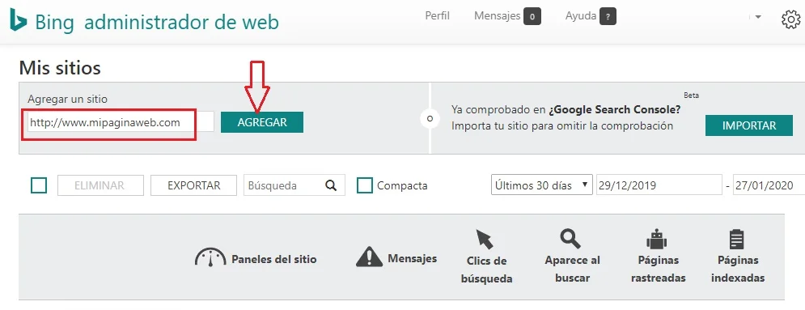
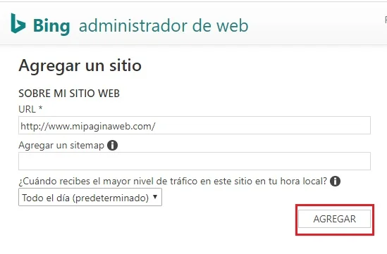
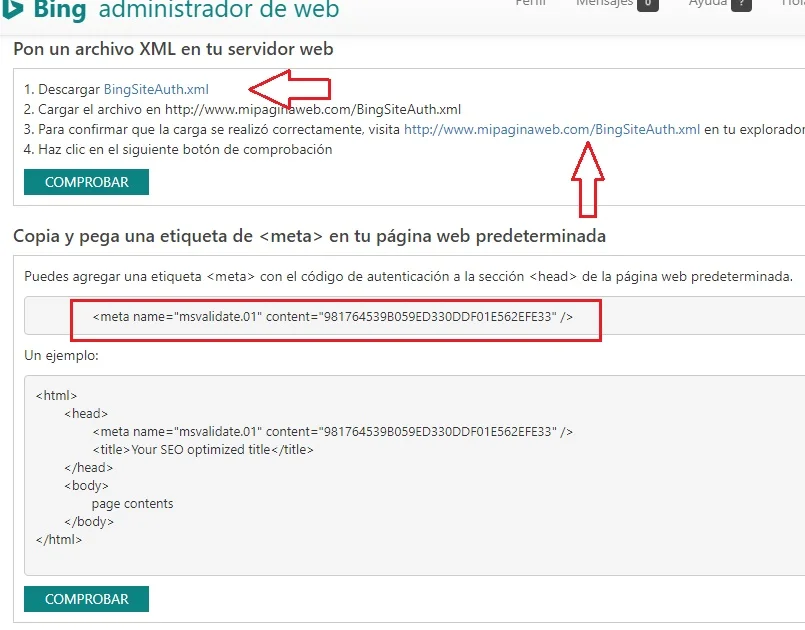

Indexar mi página web en Bing
Lo primero que debes hacer es ingresar a WebMaster, dale clic a la imagen de abajo para ingresar.
Serás redireccionado WebMaster lo que debes hacer allí es iniciar seción, puedes hacerlo con tu cuenta de Microsotf, Google o incluso Facebook.
Listo, habrás ingresado al la siguiente página y lo que deberás hacer es agregas tu sitio we.

Luego solo le das a "Agregar"

Aquí es donde vas a comprobar tu sitio web, hay tres formas que te recomienda Bing, la primera es la que me parece más fácil, descargando el archivo "BingSiteAuth.xml" y despues te vas a Wordpress vas al administrador de archivos y lo pegas en la raíz y después simplemente le das a comprobar.
La segunda manera es dirigiendose al código de tu sitio y pegando la etiqueta que te brinda Bing en la cabecera del sitio

Aquí la comprobación en inmediata así que al darle a comprobar tu sitio web ya es indexado por el robot de Bing.
Como ves es muy fácil hacerlo, pero el hecho de que tu página web esta indexada por los motores de búsqueda más grandes no quiere decir que todo el trabajo este hecho, debes publicar muchos artículos de calidad para las personas dependiendo la temática de tu blog, y probar con palabras clave que harán que suba tu posición.
Si tienes un negocio y puedes pagar publicidad es mucho mejor por que el tráfico es mucho mayor y rápido
También puede seguir uno de nuestros cursos que te ayudarán a posicionar tu web con SEO orgánico o en otras palabra con tráfico natural que con el tiempo no deberás pagar por él.
CLIC AQUÍ